1. Постоянный и переменный ток
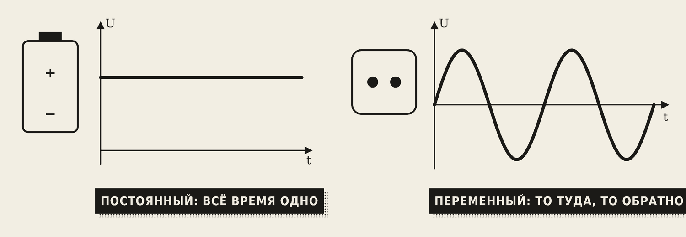
- Постоянный ток всё время течёт в одну сторону и не меняется: батарейка, аккумулятор, солнечная панель.
- Переменный ток постоянно меняет величину и направление: то туда, то обратно. Именно такой ток в розетке.
В розетке ток меняется по синусоиде — плавной волне. Почему вся энергетика мира на переменном токе? Его легко повышать и понижать трансформатором, а значит — дёшево передавать по проводам на сотни километров.
2. Как получают переменный ток
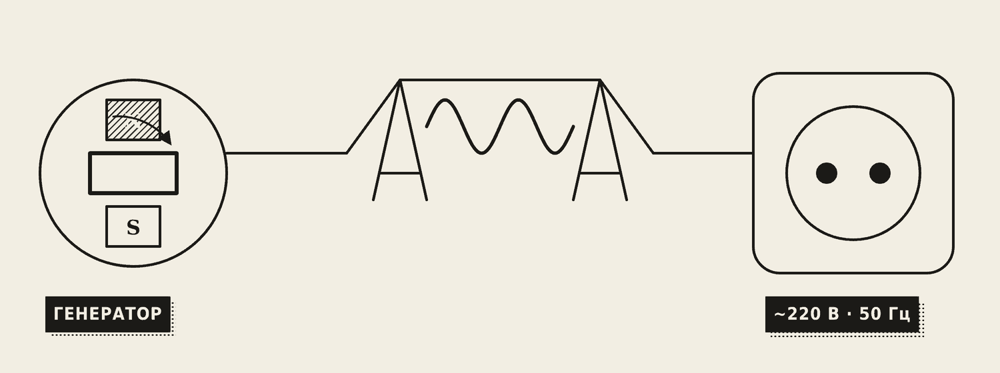
Переменный ток вырабатывает генератор. Внутри вращается магнит (или рамка с проводом вращается в магнитном поле). Магнитный поток через обмотку всё время меняется, и по закону электромагнитной индукции в обмотке появляется ЭДС. Когда магнит поворачивается другим полюсом — ЭДС меняет знак. Так устроены генераторы Иркутской и Братской ГЭС.
Посмотрите, как вращение рамки превращается в синусоиду:
3. Параметры синусоиды
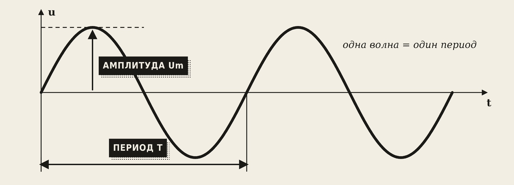
- Амплитуда Um — самое большое значение напряжения (вершина волны).
- Период T — время одной полной волны, в секундах.
- Частота f — сколько волн за одну секунду, в герцах [Гц].
- Фаза — с какой точки волны начинается отсчёт; важна, когда сравнивают две волны.
f = 1 / T
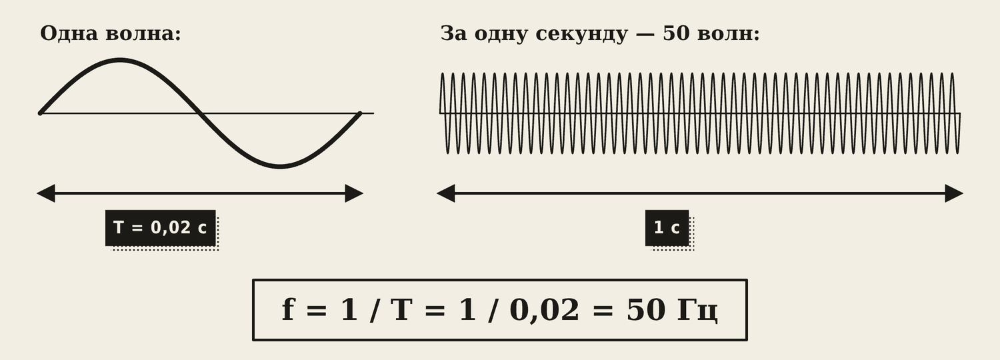
Пример. В нашей сети f = 50 Гц. Период T = 1 / 50 = 0,02 с. За секунду 50 волн, а направление тока меняется 100 раз в секунду (дважды за каждую волну).
4. Почему «220 В», если на пике 311 В
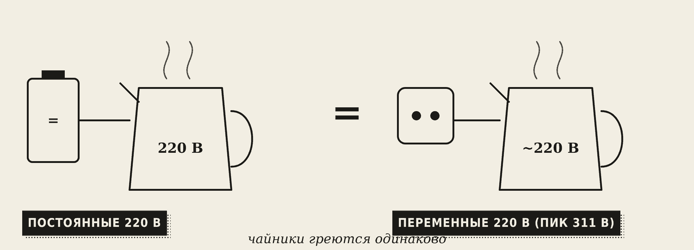
Напряжение в розетке всё время меняется: от +311 В до −311 В. Почему же пишут «220 В»? Это действующее значение — такое постоянное напряжение, которое грело бы чайник точно так же.
U = Um / 1,41
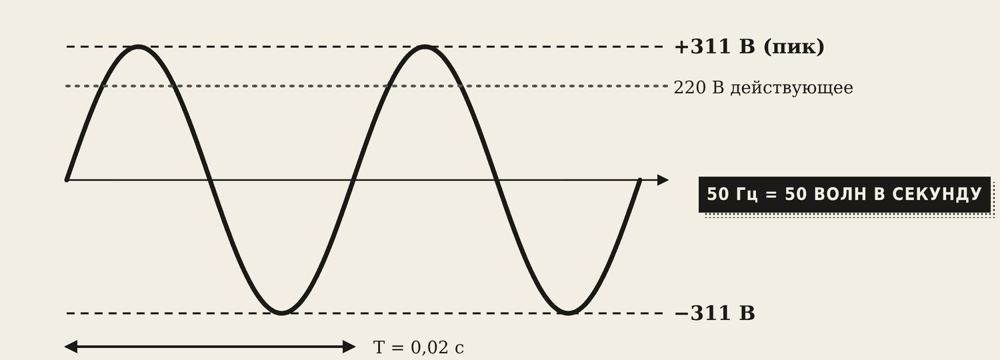
Запомните
«220 В, 50 Гц» означает: действующее напряжение 220 В (амплитуда около 311 В), 50 волн в секунду, период 0,02 с. Все вольтметры и амперметры переменного тока показывают действующие значения.
Изоляция проводов и конденсаторы должны выдерживать не 220, а пиковые 311 В. Поэтому конденсаторы в сварочном инверторе заряжаются примерно до 310 В.
5. Резистор на переменном токе
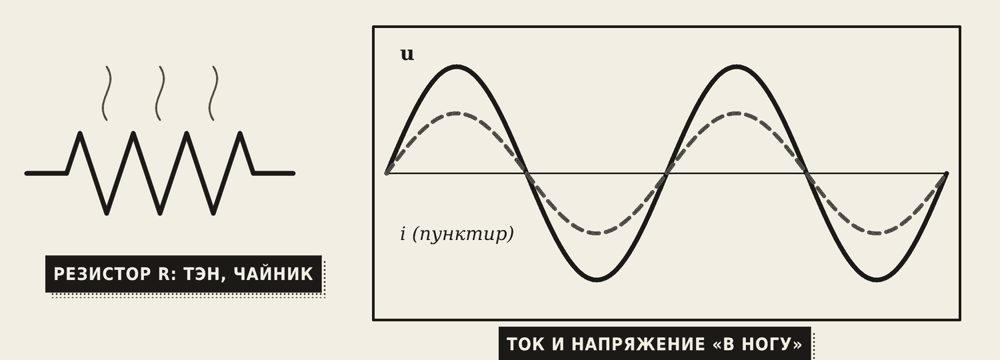
У резистора активное сопротивление R. Ток и напряжение идут «в ногу»: вершины волн совпадают. Вся энергия превращается в тепло. Примеры: ТЭН, чайник, лампа накаливания.
6. Катушка на переменном токе
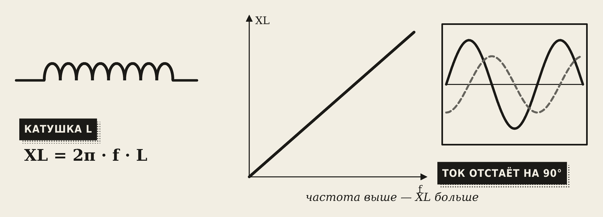
Катушка противится изменению тока (самоиндукция). На переменном токе это проявляется как индуктивное сопротивление:
XL = 2π · f · L
- XL растёт с частотой: чем быстрее меняется ток, тем сильнее катушка ему мешает. На постоянном токе XL = 0 — остаётся только сопротивление провода.
- Ток в катушке отстаёт от напряжения на четверть периода — на 90°.
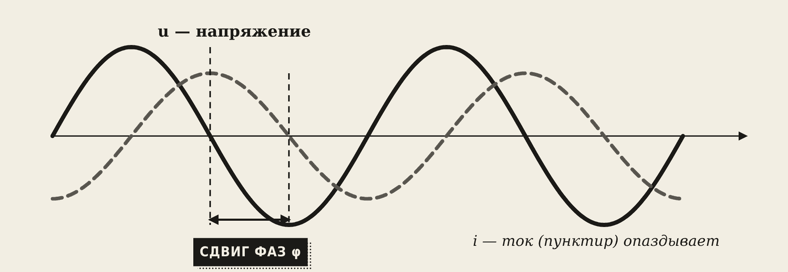
Сдвиг фаз φ — насколько одна волна опаздывает от другой. Полная волна — 360°, четверть волны — 90°.
7. Конденсатор на переменном токе
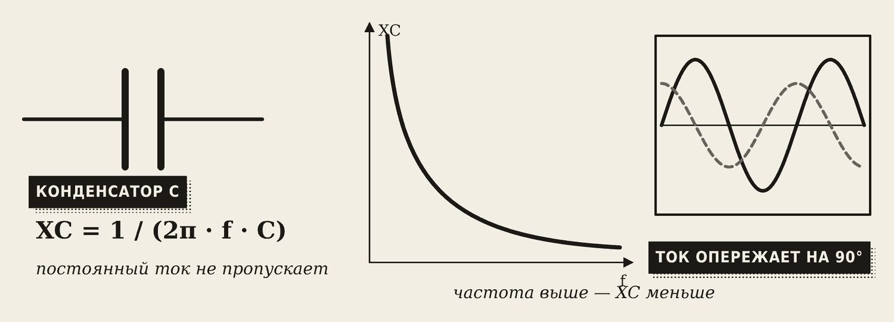
Конденсатор постоянный ток не пропускает (между пластинами изолятор). А переменный — пропускает: он то заряжается, то разряжается, и в проводах течёт ток. Его ёмкостное сопротивление:
XC = 1 / (2π · f · C)
- XC падает с ростом частоты.
- Ток в конденсаторе опережает напряжение на 90°.
Посмотрите все три элемента на одном экране:
Запомните
Запоминалка: у катушки ток отстаёт, у конденсатора — опережает, у резистора — в ногу.
8. Дроссель в сварке
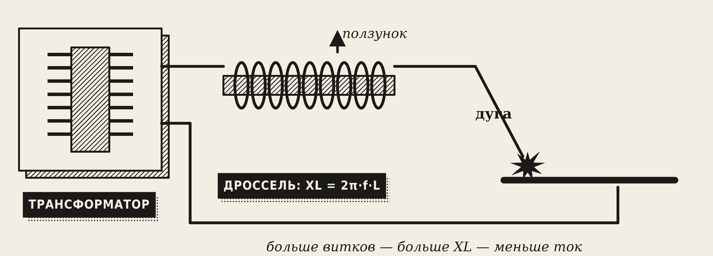
Чтобы ограничить переменный ток, можно поставить резистор — но он будет греться и тратить энергию. Катушка (дроссель) ограничивает ток своим XL и почти не греется. Поэтому в старых сварочных аппаратах переменного тока ток регулировали дросселем: больше витков — больше XL — меньше сварочный ток.
Словарик
- Переменный ток — ток, который меняет величину и направление.
- Синусоида — плавная волна, по которой меняется напряжение в сети.
- Амплитуда Um — наибольшее значение.
- Период T — время одной волны, в секундах.
- Частота f — число волн в секунду, в герцах.
- Действующее значение — постоянное напряжение, которое греет так же; U = Um / 1,41.
- Активное сопротивление R — сопротивление резистора; энергия уходит в тепло.
- Индуктивное сопротивление XL — сопротивление катушки переменному току; растёт с частотой.
- Ёмкостное сопротивление XC — сопротивление конденсатора; падает с ростом частоты.
- Сдвиг фаз φ — насколько волна тока опаздывает или опережает волну напряжения, в градусах.
- Дроссель — катушка, которая ограничивает и сглаживает ток.
Эталоны в тетрадь
Перепишите в тетрадь по билетам — каждый эталон на отдельную страницу, с рисунком и строкой «Мой пример».
Переменный ток и его параметры
Переменный ток: получение, синусоида, амплитуда, период, частота, фаза. Действующее значение. Что означает «220 В, 50 Гц».
- Переменный ток постоянно меняет величину и направление. В розетке он меняется по синусоиде (волна). (Нарисуйте синусоиду.)
- Получают генератором: магнит вращается внутри обмоток (или рамка в магнитном поле), как на ГЭС.
- Амплитуда Um — самое большое значение. Период T — время одной волны, [с]. Частота f — сколько волн за секунду: f = 1 / T, [Гц]. Фаза — с какой точки волны начинаем отсчёт.
- Действующее значение — такое постоянное напряжение, которое грело бы чайник так же: U = Um / 1,41.
- «220 В, 50 Гц»: 220 В — действующее значение (амплитуда ≈ 311 В); 50 Гц — 50 волн в секунду, ток меняет направление 100 раз в секунду, T = 0,02 с.
R, L и C в цепи переменного тока
Резистор, катушка и конденсатор в цепи переменного тока: активное, индуктивное и ёмкостное сопротивления, сдвиг фаз.
- Резистор (R) — активное сопротивление. Ток и напряжение идут «в ногу» (без сдвига). Энергия уходит в тепло: ТЭН, чайник.
- Катушка (L) — индуктивное сопротивление XL = 2π·f·L. Растёт с частотой. Ток отстаёт от напряжения на 90°.
- Конденсатор (C) — ёмкостное сопротивление XC = 1 / (2π·f·C). Падает с ростом частоты; постоянный ток не пропускает. Ток опережает напряжение на 90°.
- В сварке: дроссель (катушка) ограничивает переменный ток без нагрева, за счёт XL.
Проверь себя
Сначала ответьте сами — в тетради или вслух. Потом нажмите на вопрос, чтобы увидеть ответ.
1Что означает «50 Гц»?
50 полных волн в секунду; период 0,02 с; направление тока меняется 100 раз в секунду.
2Амплитуда напряжения 311 В. Какое действующее значение?
311 / 1,41 ≈ 220 В.
3Период 0,01 с. Какая частота?
f = 1 / 0,01 = 100 Гц.
4Что показывает вольтметр переменного тока — амплитуду или действующее значение?
Действующее значение.
5Почему конденсатор не пропускает постоянный ток, а переменный пропускает?
Между пластинами изолятор. Переменный ток всё время перезаряжает конденсатор — в проводах течёт ток.
6Как меняется XL катушки, если частота выросла вдвое?
Тоже вырастет вдвое: XL = 2π·f·L.
7В каком элементе ток отстаёт от напряжения на 90°?
В катушке (индуктивности).
8Чем дроссель лучше резистора для ограничения сварочного тока?
Дроссель ограничивает ток своим XL и почти не греется, а резистор тратил бы энергию на нагрев.
Попробуйте в лаборатории
Откройте на телефоне или компьютере — ничего устанавливать не нужно.
Ответы к «Проверь себя»
- 50 полных волн в секунду; период 0,02 с; направление тока меняется 100 раз в секунду.
- 311 / 1,41 ≈ 220 В.
- f = 1 / 0,01 = 100 Гц.
- Действующее значение.
- Между пластинами изолятор. Переменный ток всё время перезаряжает конденсатор — в проводах течёт ток.
- Тоже вырастет вдвое: XL = 2π·f·L.
- В катушке (индуктивности).
- Дроссель ограничивает ток своим XL и почти не греется, а резистор тратил бы энергию на нагрев.